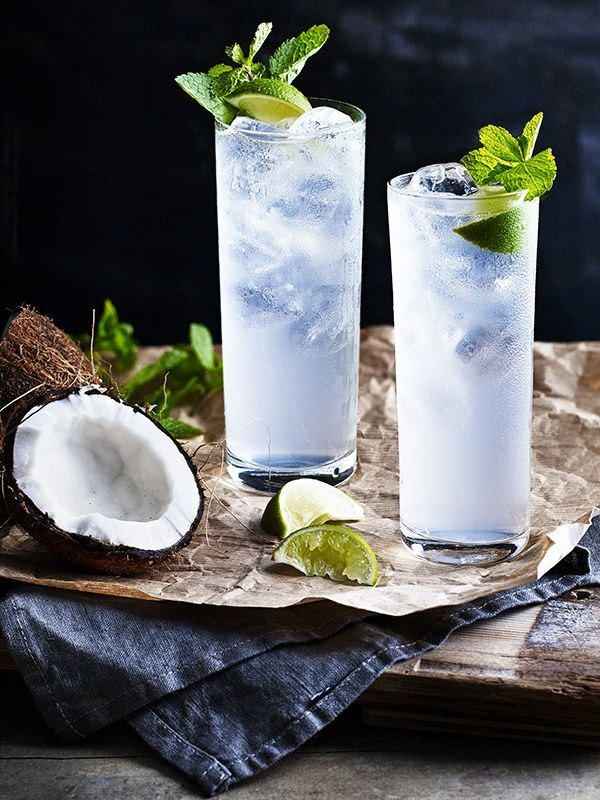

အုန်းစိမ်းရည်
သဘာဝ လျှပ်စစ်ဓာတ်ဆားများ ပါဝင်ခြင်း: ပိုတက်စီယမ်၊ ဆိုဒီယမ်နှင့် မဂ္ဂနီစီယမ်တို့ ကြွယ်ဝစွာ ပါဝင်သဖြင့် အားကစားလုပ်ဆောင်ပြီးချိန် သို့မဟုတ် နေပူထဲမှ ပြန်လည်ရောက်ရှိချိန်တွင် သောက်သုံးပါက ခန္ဓာကိုယ်ကို ချက်ချင်း လန်းဆန်းစေပါသည်။ အစာခြေစနစ်ကို ကောင်းမွန်စေခြင်း: အမျှင်ဓာတ် အနည်းငယ် ပါဝင်ပြီး ခန္ဓာကိုယ်အတွင်းရှိ အဆိပ်အတောက်များကို ဖယ်ရှားပေးနိုင်စွမ်း ရှိပါသည်။ ကျောက်ကပ် ကျန်းမာရေး: ကျောက်ကပ်တွင် ကျောက်တည်ခြင်းကို ကာကွယ်ပေးနိုင်တယ်ဟု ဆေးပညာအရ ယူဆကြပါသည်။ အသားအရေ လှပစေခြင်း: အုန်းရည်တွင် ပါဝင်သော Antioxidants များက ဆဲလ်များကို ပြုပြင်ပေးပြီး အသားအရေကို စိုပြေစေပါသည်။ မြန်မာနိုင်ငံအလယ်ပိုင်းမှာရှိတဲ့ ' တွင်းမ 'လို သဘာဝ ဆားခါးရေတွင်းကြီးတွေဆီ သွားလည်ရင်း ချိုအေးတဲ့ အုန်းရည်ရဲ့ အရသာကို ခံစားနိုင်ပါတယ်